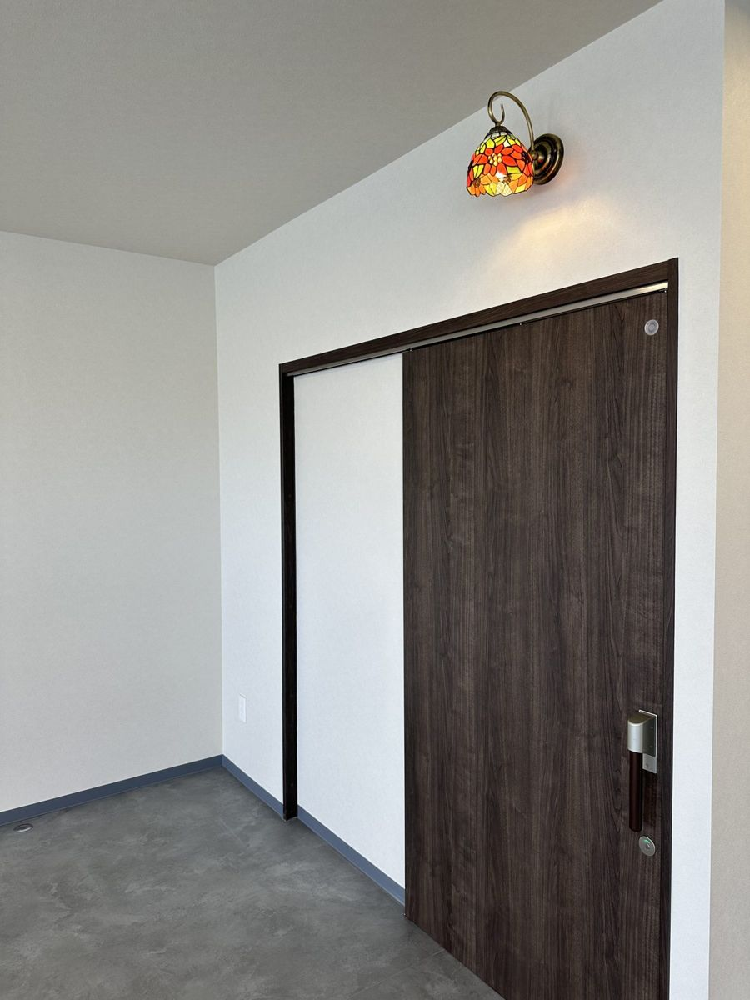

FIORETTOとは、イタリア語で「小さな花」という意味です。障害を抱えた方も、抱えていない方も、日常生活の中にはたくさんの小さな幸せがあります。「皆様の小さい幸せをたくさん咲かせていきたい」「小さな幸せが集まって大きな幸せを感じてほしい」。その想いを込めて、事業所名をFIORETTOとしました。

体調に合わせて、作業かプログラム活動かを選ぶことができます。無理にがんばらせることはしません。
精神障害・知的障害・発達障害・難病のある方。18歳以上で、生活介護の対象となる方がご利用いただけます。
相談支援事業所、医療機関、学校・行政と情報を共有し、ご家族と一緒にその人の暮らし全体を支えます。
作業をするか、プログラム活動をするかを選択することができます。月に一度はイベントも企画しています。
簡単な作業を通して、働く喜びと生活リズムをつくります。
ものづくりやアート。好きなことに没頭できる時間を大切にします。
身体を動かす習慣をつくり、健康と体力を育てます。
映像や音楽の鑑賞、学習プログラム。興味の幅を広げます。
看護職員を配置しています。日々の体調確認、服薬の見守り、体調の変化への対応など、安心して通っていただける体制です。
ご自宅と事業所の間を送迎します。対応エリアについては、まずはお気軽にお問い合わせください。
開所日は月曜日〜金曜日、9:30〜16:00です。
作業・プログラム活動
お昼休憩
作業・プログラム活動
はじめての方も、まずはお電話一本からどうぞ。見学だけでも歓迎です。
お電話でご連絡ください。
実際の活動の様子をご覧いただけます。
お住まいの市区町村で申請を行います。
市区町村から受給者証が発行されます。
個別支援計画を作成し、ご利用スタートです。
| 事業所名 | 生活介護事業所 FIORETTO（フィオレット） |
|---|---|
| サービス種別 | 障害福祉サービス 生活介護 |
| 所在地 | 〒344-0004 埼玉県春日部市牛島125-1 |
| 電話 | 048-795-9246 |
| FAX | 048-795-9247 |
| 開所日・時間 | 月曜日〜金曜日 9:30〜16:00 |
| 対象 | 精神障害・知的障害・発達障害・難病のある方（生活介護の対象となる方） |
| 送迎 | あり。対応エリアはお問い合わせください |
| 運営法人 | 有限会社キープ |
上記連絡先にて、ぜひ見学にお越しください。ご本人、ご家族、相談支援専門員の方からのお問い合わせをお待ちしています。
048-795-9246 見学受付募集中｜FAX 048-795-9247 運営グループのサイトを見る 生活介護事業所｜春日部市
生活介護事業所｜春日部市